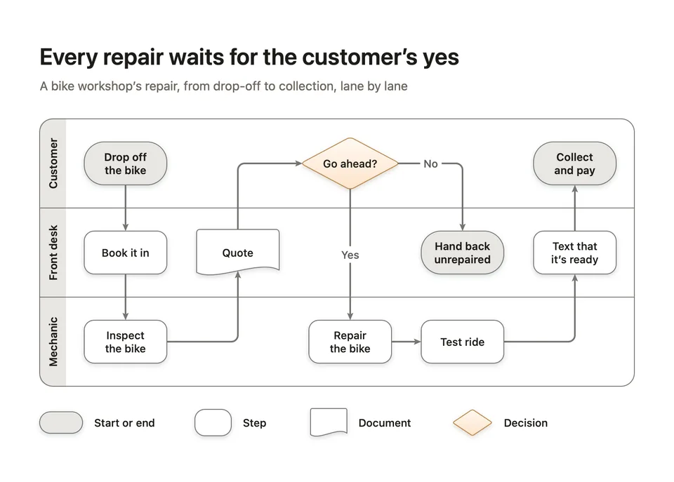
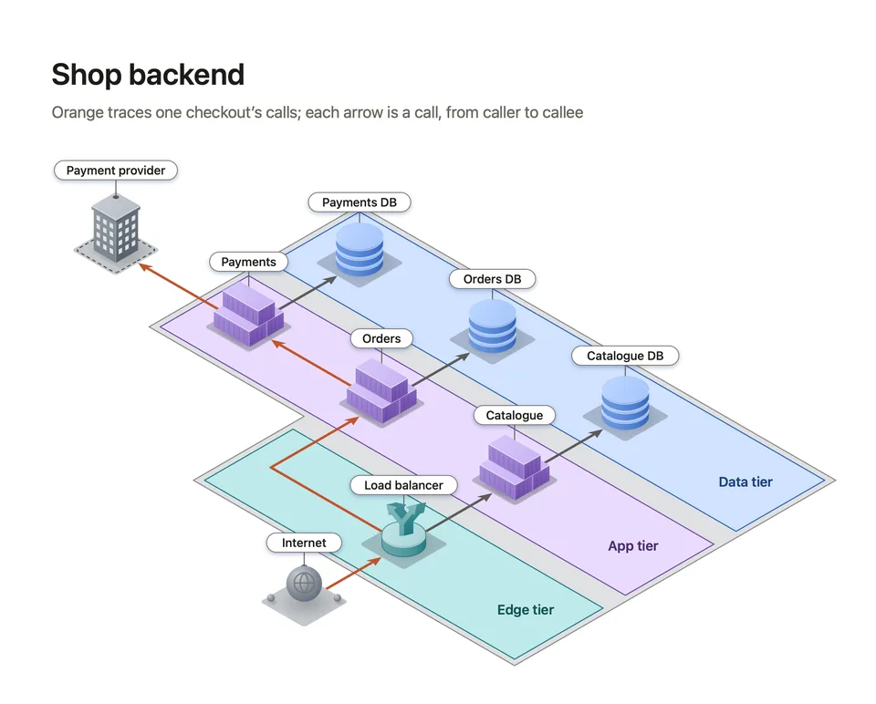
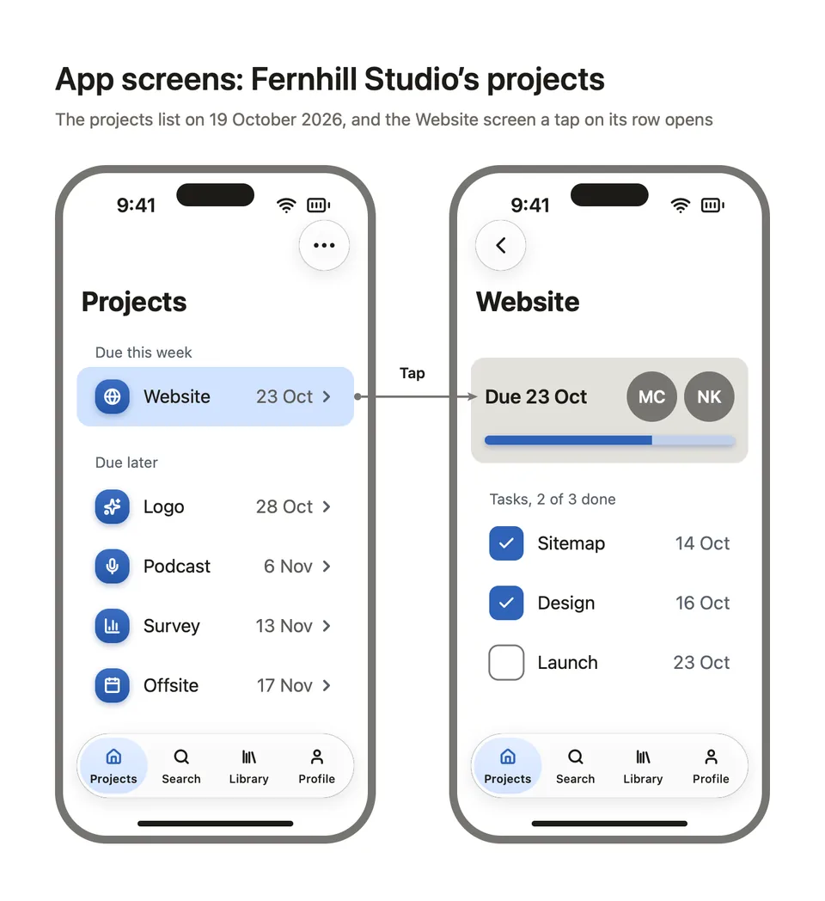
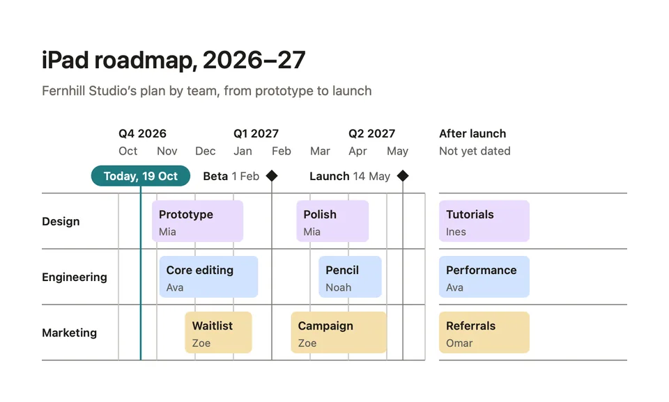
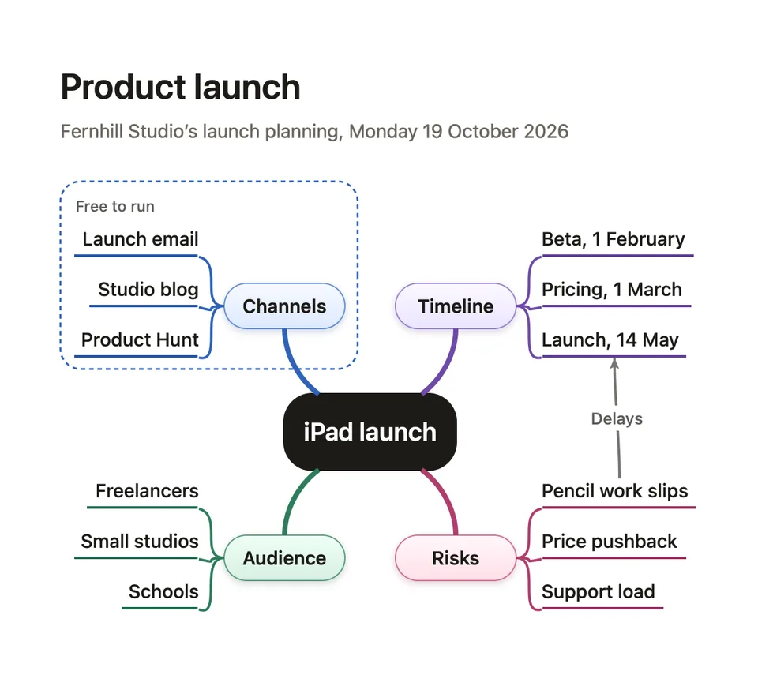
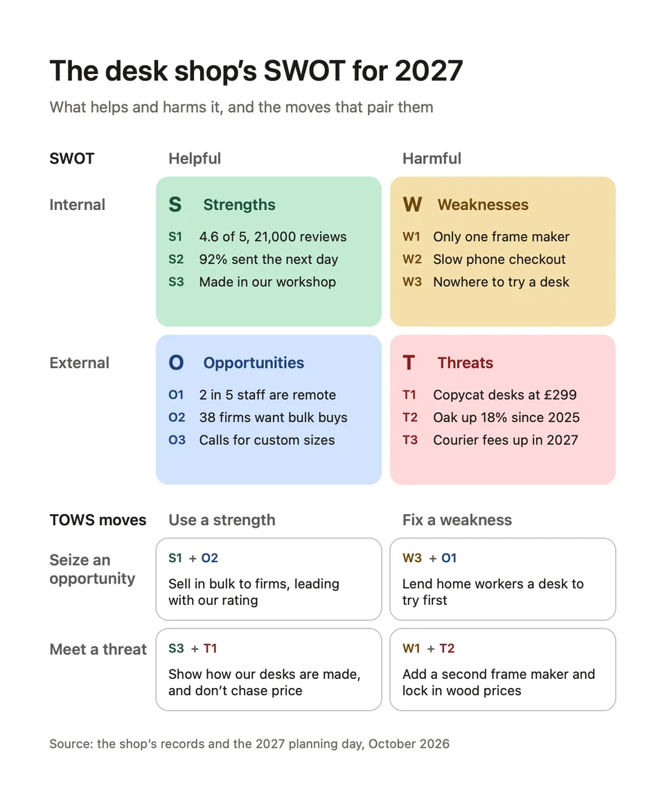
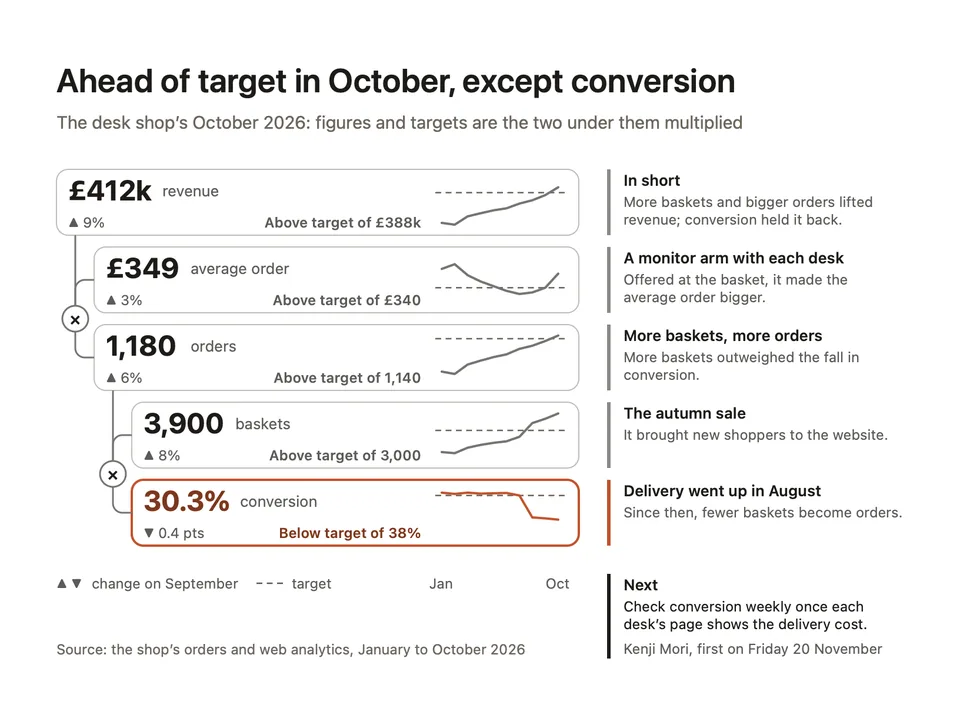
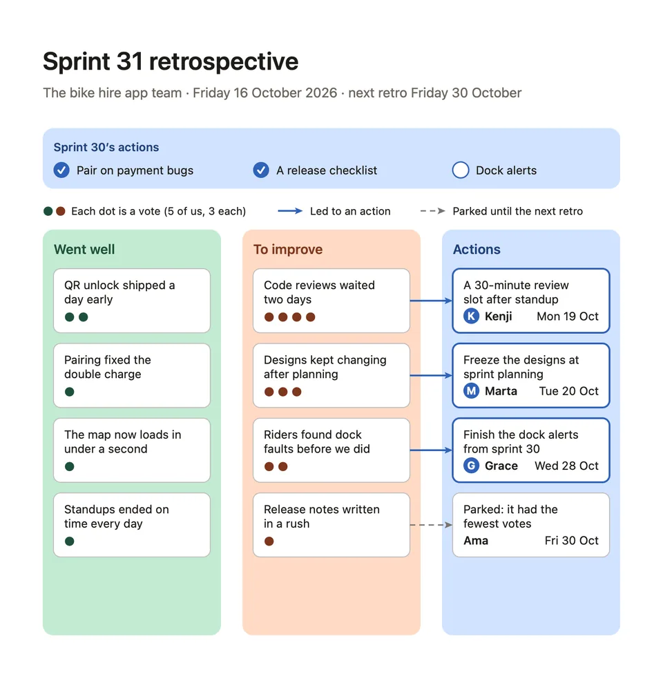
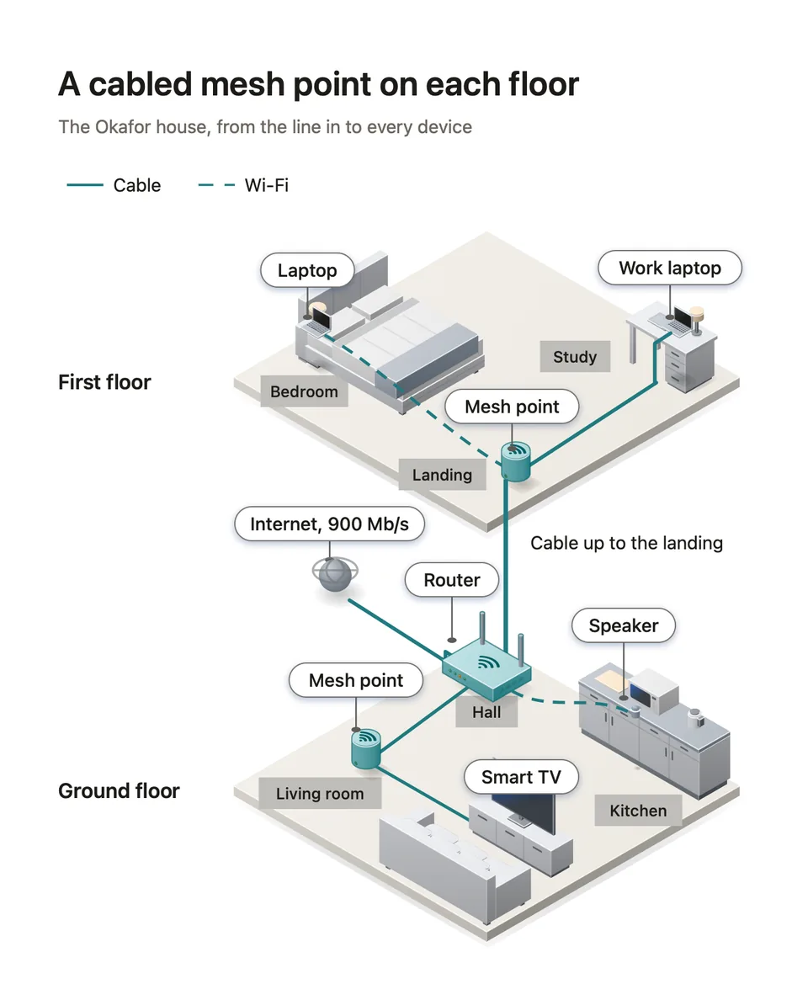
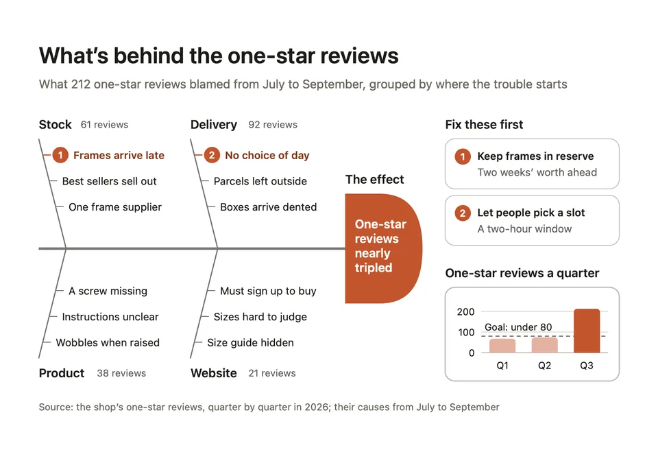

Diagram templates for Mac and iPad
Diagrove comes with 63 templates in ten categories, plus a blank diagram and a blank isometric diagram. A template is a finished example diagram you start from: a flowchart with its swimlanes, a roadmap with its quarters, an office floor with its desks. Everything in it is yours to change.
Each page here shows a template as Diagrove draws it, on White and on Ink paper, says what it’s for and what’s in it, and how to start a diagram from it on your Mac or iPad. Templates, in the guide, explains the gallery in the app.
63 templates in 10 categories
Blank
An empty canvas, flat or isometric, for when you know what you want to draw.
- Blank diagram
- Blank isometric diagramISOMETRIC

Process
Steps, decisions and handoffs: flowcharts with swimlanes, customer journeys, process maps, decision trees, approvals and an isometric packing line.

Software
Systems and how their parts talk: architecture in isometric and in C4, networks, sequence diagrams, database schemas, state machines and release pipelines.

Product
Screens, flows and pages for the apps and sites you design, from wireframes and sitemaps to story maps and a prototype that plays.

Planning
Plans with dates: roadmaps, kanban boards, Gantt charts, release trains, a weekly planner and a launch checklist.

Ideas and teams
Ideas and the people who hold them: mind maps and concept maps, org charts, RACI and skills matrices, and how teams work together.

Business and strategy
Strategy on one page: SWOT, a priority matrix, the business model and lean canvases, stakeholders, Porter’s five forces and OKRs.

Data and reports
Numbers that make a point: a KPI board, a data story, a funnel, survey results, a monthly report and market share, each chart with what it shows.

Meetings and workshops
For the room: a retrospective, a timed agenda, a brainstorm with dot votes, an empathy map and an affinity map.

Spaces
Isometric scenes built from stencils at true scale: a home network, a warehouse, a data centre, an office floor, a shop and an event venue.
- Home networkISOMETRIC
- WarehouseISOMETRIC
- Data centreISOMETRIC
- Office floorISOMETRIC
- ShopISOMETRIC
- Event venueISOMETRIC

Infographics
Posters that explain one thing: a fishbone, a comparison, a timeline, a cutaway explainer, a before and after, a cycle, a pyramid and a Venn diagram.